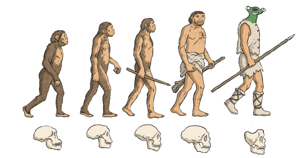

Welcome to Sidma.life!
Presented by Tsar Ali
Presented by Tsar Ali
The first evidence of Sidma life dates back to March 22nd, 2022. Historians believe this is when the first "Busting" occurred. Busting is a accicent and holy tradition among Sidmas that happens at lunch when a lunch milk carton gets wet because it was punished to much. After the Milk starts dripping, a chossen Sidma will open the carton and begin drinking. It is at this time that the rest of the Sidmas will try to make the drinker of the milk laugh, and subsequently bust out with hardy chuckles. Because of this tradition the first Sidmas labeled themselves as "Busters". The impact of this era can still be found today. The phrase "Thy Busters" has staying in common dielect throughout the ages. Busting is still a common sight to see at lunch after the meals are finished.
After the emergence of the first Sidmas, there was a ice age (Late spring to early fall 2023). During this time pop culture trends slowed down and many busters 'came' and went. Some of these people inculde Sam, Collin and Obi. There some societal progress in this time, such as Leo and Charlie becoming busters and the intoduction of early running jokes among Sidmas such as Mrs Coonrod, Racial Leo and the origin of Chris Turner being called sid, coined by Eli Carlson. Besides this it was a lot of 9/11 and communism jokes as well as a turf war with the mexicans bordering us.
This was a time of great innovation in the Sidma world the likes of which had never been seen. The name "Buster" became less commonplace and was slowly replaced with the modern term Sidma, a combonation of Sid and Sigma, thought of by Tsar Ali himself. Other progessive ideas inculde Tsar Ali's beef with Isaac Gosteli, Abtrusive Mire, Pepper AI, the over sexualization of women, thy pepeogger, The Creation of Sid Chamber and the failed anti-sidma rebelion, the inclusion of Isaac as a Sidma, Geoguessr, the now common phrase "Leo Brain" and much more. Much of the cultural revolution of this time can still be seen today.
That brings us to modern day (2024 - present). While much has stayed the same since the renaissance, there have been minor additions to the lore. There have been satirical jokes made that the Tsar has feelings for Cece due to her witnessing the Tsar bravely extinguish the fire that Sam had started with his evil intensions. The rumors have been proven false. Besides that the Tsar has been facing troubles with the public having fantasies about his royal family. The Tsar does not like this. The modern era has also brought about a constant problem that is game night. What is supposed to be a fun friday night were Sidmas can play games has been deserted because of a lack of players. The Tsar will fix this, we just have to work harder.